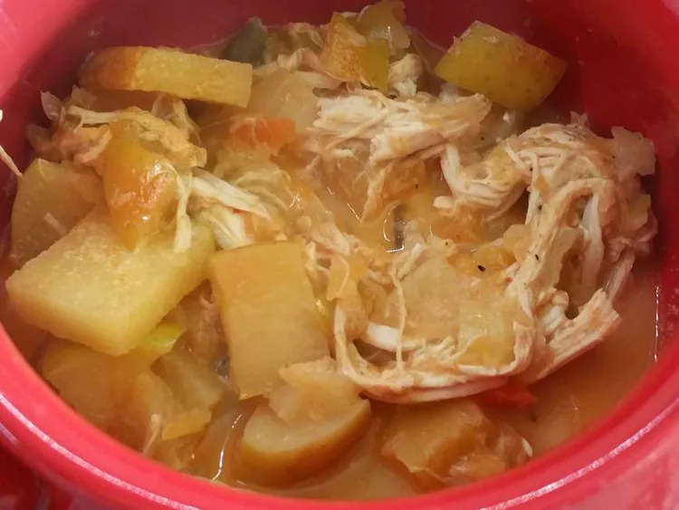

Chicken and Apple Curry

Description
A simple apple-curry butter sauce adds a delicious flavor to traditional baked chicken.
Ingredients
- 3 tablespoons butter
- 2 small onion, chopped
- 2 apples - peeled, cored and finely chopped
- 3 tablespoons all-purpose flour
- 1 tablespoon curry powder
- 8 skinless, boneless chicken breasts
- 1 cup hot chicken broth
- 1 cup milk
- salt and pepper to taste
Steps
- Preheat oven to 350 degrees F (175 degrees C).
- Saute apple and onion in butter or margarine until tender. Add curry powder and saute 1 minute more. Add flour and continue to cook 1 minute longer. Add stock or broth and milk; stir well.
- Salt and pepper chicken breasts to taste and lay in a single layer in a 9x13 inch (or larger) baking dish. Pour sauce mixture over chicken breasts and bake in preheated oven for 45 to 50 minutes, until chicken is done.